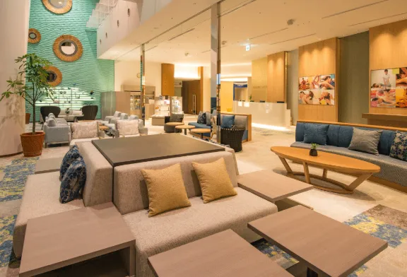
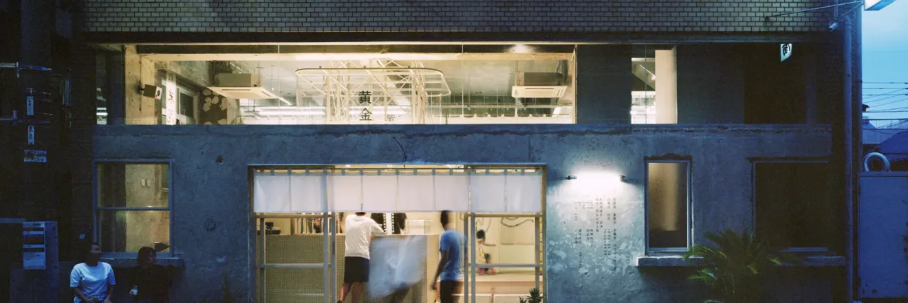
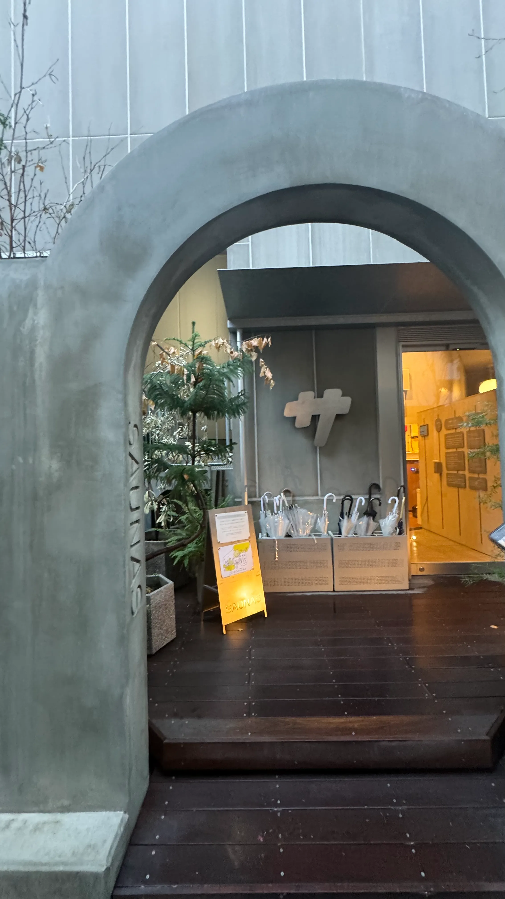
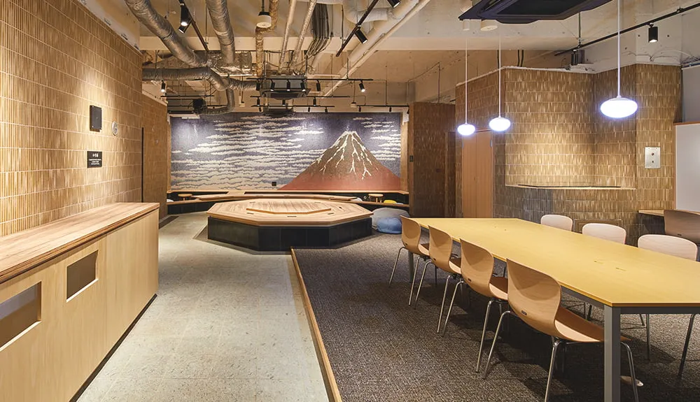
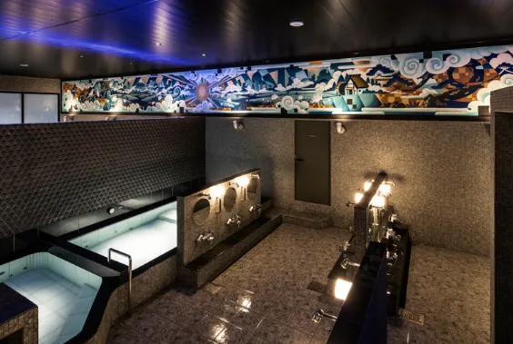
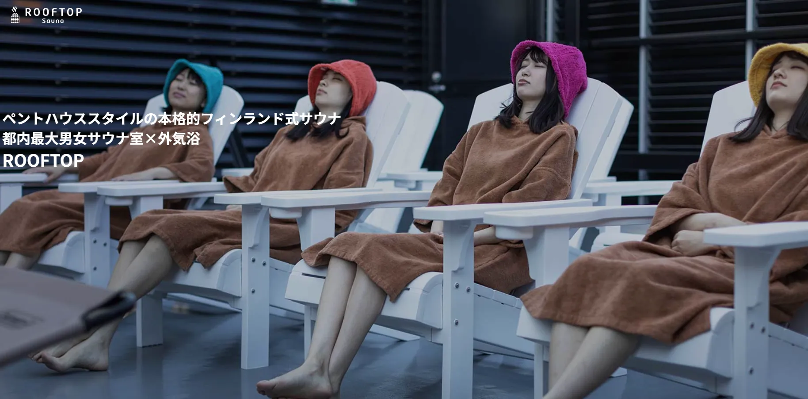
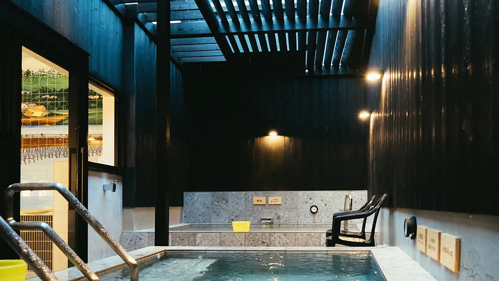
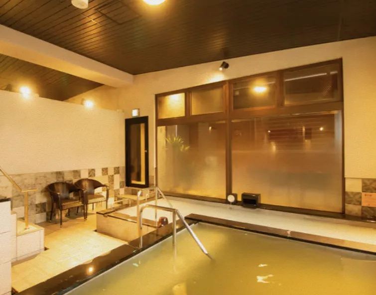

最新サウナランキング TOP10

スパ ラクーア
後楽園
3,230円〜
男女利用可
都心にいながらリゾート気分。4種類のサウナと天然温泉で極上の癒やしを。
詳細を見る

黄金湯
錦糸町
520円〜
男女利用可
老舗銭湯がリニューアル。オートロウリュサウナと水風呂の導線が完璧。
詳細を見る

渋谷SAUNAS
渋谷
3,080円〜
男女利用可
サ道著者監修。9つのサウナと水風呂を楽しめるサウナのテーマパーク。
詳細を見る

両国湯屋 江戸遊
両国
2,970円〜
男女利用可
和モダンな空間でリラックス。コワーキングスペースも完備で一日過ごせる。
詳細を見る

タイムズ スパ・レスタ
池袋
3,150円〜
18歳以上
大人のための上質空間。露天風呂での外気浴は格別の心地よさ。
詳細を見る

改良湯
渋谷
520円〜
男女利用可
スタイリッシュなデザイナーズ銭湯。薄暗いサウナ室で没入感たっぷり。
詳細を見る

ROOFTOP
西荻窪
1,980円〜
男女利用可
西荻窪の屋上にある本格フィンランドサウナ。広々とした外気浴スペースが自慢。
詳細を見る

SaunaLab Kanda
神田
2,700円〜
男女利用可
実験的なサウナ体験。マイナス25℃のアイスサウナで新感覚のととのいを。
詳細を見る

堀田湯
西新井
520円〜
男女利用可
露天風呂にある水深160cmの水風呂と、オートロウリュサウナが魅力。
詳細を見る

COCOFUROかが浴場
王子
520円〜
男女利用可
爆風ミュージックロウリュが名物。エンタメ性抜群の銭湯サウナ。
詳細を見る